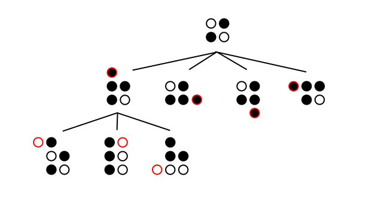

CS2 Assignment 9: Othello - Part 2
Due Monday, March 18, 2013, at 28:00 PST
Introduction
This is Part 2 of a two-part CS2 assignment on Othello. For Part 1, click here.
Assignment Background
As mentioned in part 1, decision trees are the standard for AI in most board games such as Othello. A decision tree is a tree of all possible moves down to a certain depth; the AI can then choose the branch that leads to the best outcome. For simple games like tic-tac-toe, this can be done for the depth of the entire game, while for complicated games like chess where the decision tree branches quickly it is only feasible to construct a decision tree for a limited depth (e.g. 10 moves ahead). For games with an especially high "branching factor", e.g. Go, constructing the entire decision tree is entirely impractical, and so programs must decide intelligently which parts of the decision tree to explore. This is also true in environments where time is a real constraint, e.g. an AI playing a casual game against a human, or an AI playing in a tournament setting where each side is allotted a maximum total time. For Othello, the top of our tree might look something like this:
The main idea behind a decision tree is that we want to make the choice that maximizes our minimum gain. That is, we want to make the choice that, if the opponent consistently makes choices that minimize our score, gives us the best possible minimum score. We do this because often making the choice that simply maximizes our score is not the best option; there are situations where we could take a large number of pieces from our opponent only to have the majority of them retaken by a series of clever moves. Maximizing our minimum gain ensures that we are not so vulnerable to such 'critical hits'.
So we could simply generate a decision tree down to a practical depth and choose the branch where the smallest possible end score within that branch is the highest such score across all branches. However, this is an inefficient approach, since we spend a lot of time considering branches that will end up being worse than branches we have already considered or that our opponent would never let us reach. If we could stop ourselves from tracing too far into these, we could save time, allowing us to look deeper with the time we have.
To accomplish this, we could use an idea called alpha-beta pruning. As we construct the decision tree, we keep track of two statistics: alpha is our best overall score, and beta is the opponent's best overall score. We start alpha at some large negative number and beta at some large positive number; as we traverse the tree, we increase alpha (since we try to maximize), and we decrease beta (since the opponent tries to minimize). If at any point we discover that making a move would set alpha greater than beta, we need not trace further into that subtree, since that represents a "mistake" made by some side; either we have made a bad move that allowed the opponent to drive the minimum score too low, or the opponent has made a bad move that allowed us to drive the maximum score too high. In any case, the entire subtree resulting from that decision need not be explored further.
The danger with conducting our search to a large depth is that, if a position has a high branching factor, we could run out of time and end up with incomplete results. To that effect, we can employ a strategy called iterative deepening, where we start out the search with a small depth and then repeat it at larger depths while using information from the earlier trials. That way, if we are interrupted due to time constraints, we can still have a good (if not necessarily optimal) result.
There are other techniques (maintaining an opening book, maintaining a transposition table) that might be useful to you when constructing your AI. You are free to read up on these. In fact, for this assignment, you are free to read up on anything that might help you, with the only exception being actual source code in any non-pseudocode language.
Prerequisites
These are the prerequisites for getting this assignment to compile (ubuntu package names):
- g++ 4.6.x+
- openjdk-6-jre
- openjdk-6-jdk (optional - only if you want to use Java)
Assignment (20 points)
For this week, your goal is to continue improving your AI. You will earn points by crushing the provided AI opponents.
You may earn points for each objective by either defeating each opponent at least once during the tournament, or outranking each opponent in the final tournament standings. Draws are judged in your favor, except where caused by an error (in which case judgment is passed by the TAs).
In addition to your AI bot, fill in the README.txt file in your repository with the following (make sure to git add it when committing):
Remember, the tournament will take place on Tuesday, March 19, at 5:00 PM in Annenberg 104 (computer cluster), and will be publicly viewable. We will be providing refreshments (pizza and drinks) if you want to come by and watch - it should be fun!
On the day of the tournament, you will be able to view realtime standings at:
http://courses.cms.caltech.edu/cs2/status.htmlIf you have any questions about this week's assignment, please contact cs2-tas@ugcs.caltech.edu, or show up at any TA's office hours.